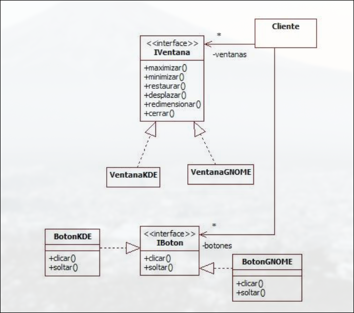
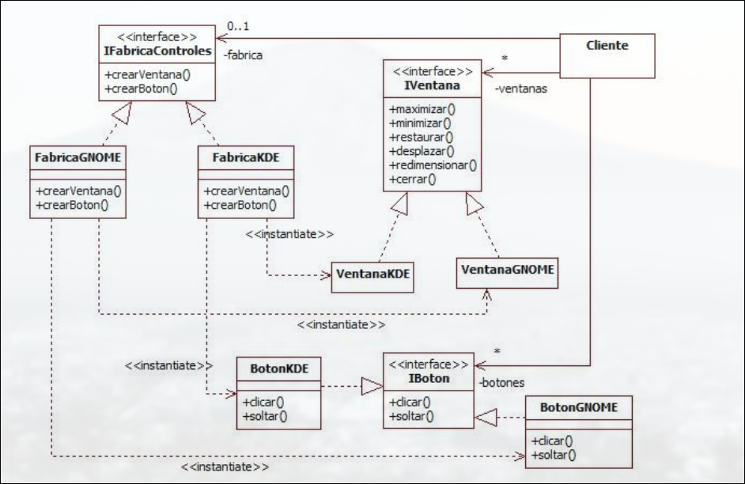
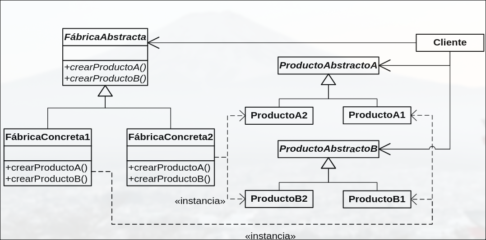
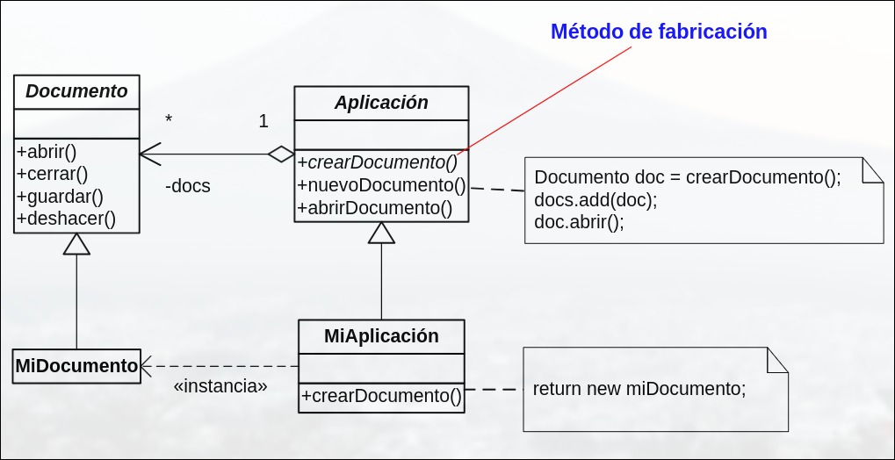
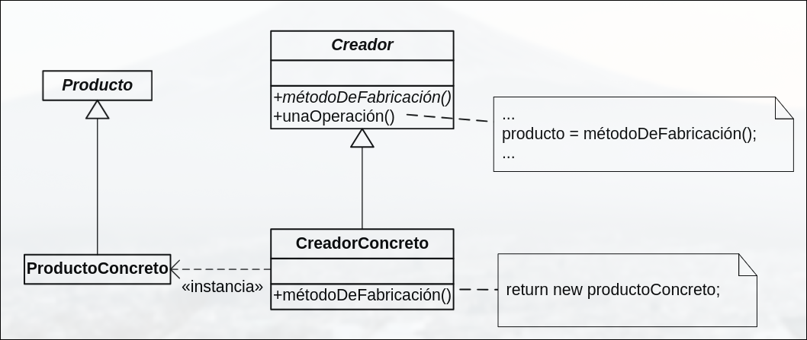

DESOFT · curso 2
8. Patrones de Creación
8.1 Patrones de creación
Los patrones de creación abstraen el proceso de creación de objetos, acotando el conocimiento sobre las clases concretas usadas. Ocultan como se crean y enlazan las instancias de las clases, de manera que el resto del sistema sólo conoce los objetos a través de sus interfaces. Hacen posible programar para interfaces y no para implementaciones.
8.2 Abstract Factory (Fábrica Abstracta)
La abstract factory aporta una interfaz para crear familias de objetos ocultando clases concretas. Se usa para:
- Configurar un sistema escogiendo una sola familia de productos entre varias.
- Si cada familia está diseñada para el uso conjunto de sus productos.
- Para proporcionar bibliotecas de productosde los que sólo se revelan sus interfaces.


Participantes:
- FabricaAbstracta: Declara una interfaz para operaciones que crean produtos abstractos.
- FabricaConcreta: Implementa operaciones para crear produtos concretos.
- ProdutoAbstracto: Declara una interfaz del tipo produto.
- ProdutoConcreto: Define un produto a ser creado por la fábrica correspondiente.
- Cliente: Usa interfaces de clases abstractas
Estructura

## Ventajas e Inconvenientes - **Consistencia** entre productos de una familia. - Fácil de **sustituir familias enteras**. - Alto nivel de **abstracción y flexibilidad**.- Difícil añadir nuevos tipos de productos.
- Puede volverse complejo si hay muchas familias/productos.
8.3 Factory Method (Método Fábrica)
El factory method define una interfaz para crear objetos cediendo a las subclases la decisión sobre qué clase instanciar. Se usa cuando:
- Una clase no puede prever la clase de objetos que debe crear.

Participantes:
- Producto: define la interfaz de los objetos creados
- ProductoConcreto: implementa la interfaz Producto
- Creador: declara el método de fabricación que devuelve un objeto Producto.
- CreadorConcreto: Redefine el método de fabricación para devolver una instancia de ProductoConcreto.
Estructura

Ventajas y Desventajas
-
Código desacoplado.
-
Fácil de extender.
-
Fomenta el uso de interfaces.
-
Puede llevar a muchas subclases si tienes muchos tipos de productos.